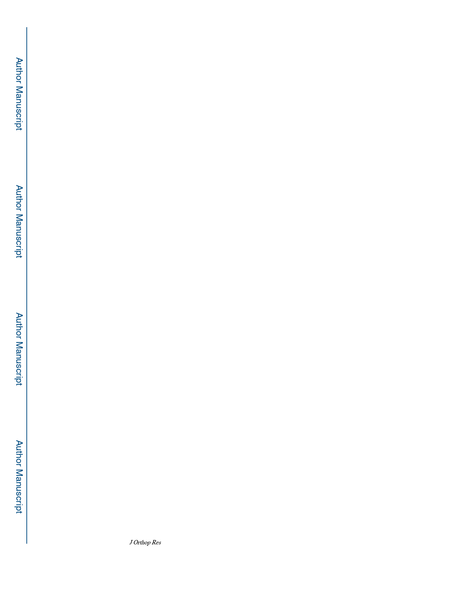

Tomizawa et al.
Page 12
27. Takahata M, Schwarz EM, Chen T, et al. 2012 Delayed short-course treatment with teriparatide
(PTH1–34) improves femoral allograft healing by enhancing intramembranous bone formation at
the graft-host junction. J. Bone Miner. Res. 27(1):26–37. [PubMed: 21956542]
28. Giavaresi G, Fini M, Cigada A, et al. 2003 Mechanical and histomorphometric evaluations of
titanium implants with different surface treatments inserted in sheep cortical bone. Biomaterials
24(9):1583–1594. [PubMed: 12559818]
29. Worlock P, Slack R, Harvey L, Mawhinney R. 1994 The prevention of infection in open fractures:
an experimental study of the effect of fracture stability. Injury 25(1):31–38. [PubMed: 8132308]
30. Pajarinen J, Cenni E, Savarino L, et al. 2010 Profile of toll-like receptor-positive cells in septic and
aseptic loosening of total hip arthroplasty implants. J. Biomed. Mater. Res. - Part A 94(1):84–92.
31. Huttenhower C, Gevers D, Knight R, et al. 2012 Structure, function and diversity of the healthy
human microbiome. Nature 486(7402):207–214. [PubMed: 22699609]
32. Barth Elin, Quentin M, Myrvik et al. 1989 In vitro and in vivo comparative colonization of
Staphylococcus aureus and Staphylococcus epidermidis on orthopaedic implant materials.
Biomaterials 10(5):325–328. [PubMed: 2765629]
33. Cheng AG, McAdow M, Kim HK, et al. 2010 Contribution of Coagulases towards Staphylococcus
aureus Disease and Protective Immunity. PLoS Pathog. 6(8):19–20.
34. Della Valle CJ, Scher DM, Kim YH, et al. 1999 The role of intraoperative gram stain in revision
total joint arthroplasty. J. Arthroplasty 14(4):500–504. [PubMed: 10428233]
35. Trampuz A, Zimmerli W. 2005 Prosthetic joint infections: Update in diagnosis and treatment.
Swiss Med. Wkly. 135(17–18):243–251. [PubMed: 15965826]
36. Lankinen P, Lehtimäki K, Hakanen AJ, et al. 2012 A comparative 18F-FDG PET/CT imaging of
experimental Staphylococcus aureus osteomyelitis and Staphylococcus epidermidis foreign-body-
associated infection in the rabbit tibia. EJNMMI Res. 2(1):1–10. [PubMed: 22251281]
37. Kassem A, Lindholm C, Lerner UH. 2016 Toll-Like receptor 2 stimulation of osteoblasts mediates
staphylococcus aureus induced bone resorption and osteoclastogenesis through enhanced RANKL.
PLoS One 11(6):1–20.
38. Cao F, Zhou W, Liu G, et al. 2017 Staphylococcus aureus peptidoglycan promotes
osteoclastogenesis via TLR2-mediated activation of the NF-κB/nfatc1 signaling pathway. Am. J.
Transl. Res. 9(11):5022–5030. [PubMed: 29218100]
39. Laborel-Préneron E, Bianchi P, Boralevi F, et al. 2015 Effects of the Staphylococcus aureus and
Staphylococcus epidermidis Secretomes Isolated from the Skin Microbiota of Atopic Children on
CD4+ T Cell Activation. PLoS One 10(10):e0141067. [PubMed: 26510097]
40. Svensson S, Trobos M, Omar O, Thomsen P. 2017 Site-specific gene expression analysis of
implant-near cells in a soft tissue infection model - Application of laser microdissection to study
biomaterial-associated infection. J. Biomed. Mater. Res. Part A 105(8):2210–2217.
41. Veiranto NAM, Tiainen ESJ, Niemel S. 2006 Innovation in multifunctional bioabsorbable
osteoconductive drug-releasing hard tissue fixation devices.:1275–1282.
42. Knabl L, Kuppelwieser B, Mayr A, et al. 2019 High percentage of microbial colonization of
osteosynthesis material in clinically unremarkable patients. Microbiologyopen 8(3):e00658.
[PubMed: 30508282]
J Orthop Res. Author manuscript; available in PMC 2021 April 01.